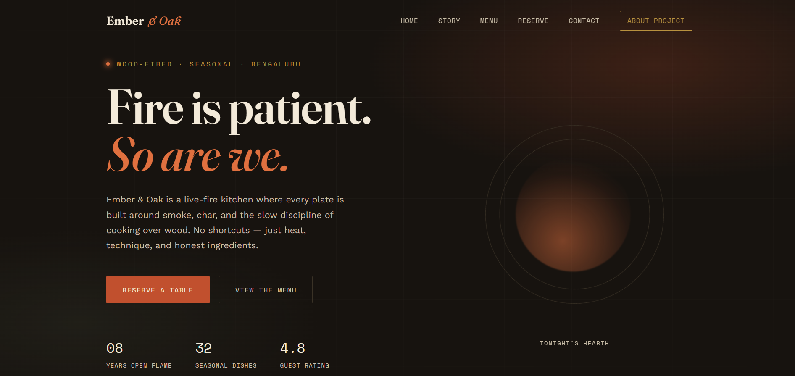
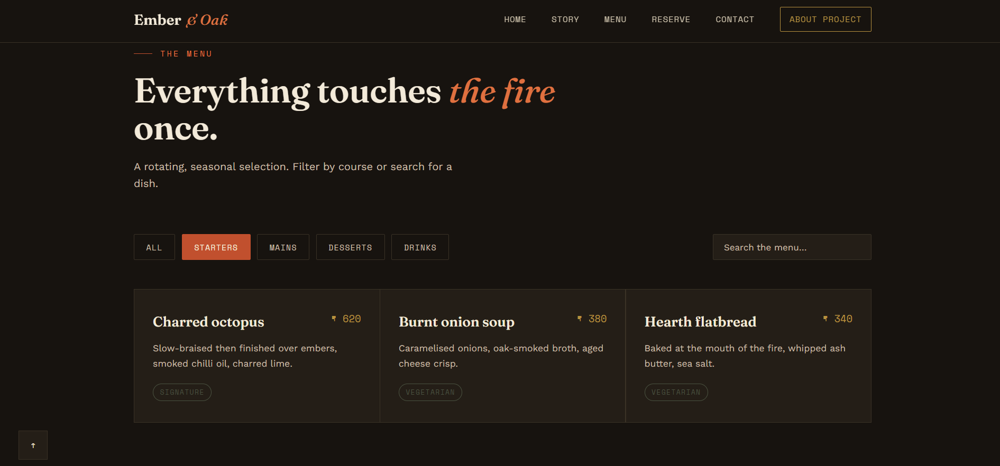
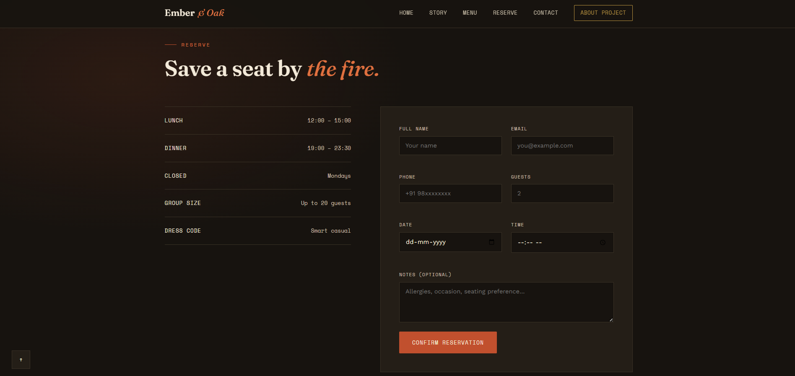
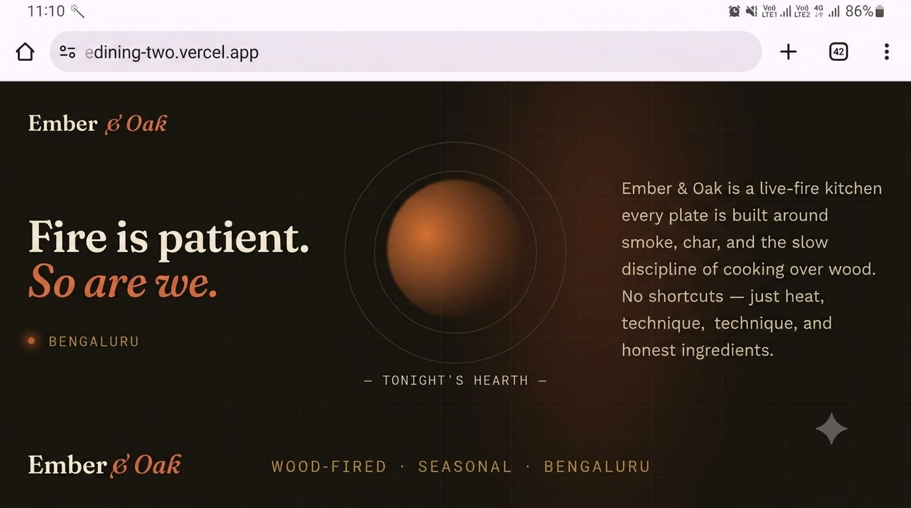

Project Overview
Project Title
Ember & Oak — Wood-Fired Fine Dining Website
Website Category
Restaurant / Fine Dining Website
Problem Statement
Independent fine dining restaurants often lack a digital presence that reflects the quality of their food and service. Guests need a fast, mobile-friendly way to browse the menu, understand the restaurant's identity, and reserve a table without phone calls or third-party apps.
Why We Chose This Project
Restaurants are a rich, real-world subject for frontend practice: they combine visual storytelling, structured data (menus, prices, hours), interactive filtering, and form-driven workflows like reservations. Fine dining specifically pushed us to design a distinctive visual identity rather than a generic template, which matched the competition's emphasis on creativity.
Project Description
Ember & Oak is a fully responsive fine dining restaurant website built with HTML5, CSS3, and vanilla JavaScript. The purpose of the site is to give a wood-fired restaurant a digital home that matches its brand: warm, confident, and built around fire and seasonal cooking, while giving guests a clear path to browse the menu and book a table.
The target users are two groups: prospective diners researching the restaurant on mobile or desktop before visiting, and returning guests who want a fast way to check the menu, hours, or make a reservation. The site is designed mobile-first in spirit, with layouts that adapt from a single-column phone view up to a wide desktop grid.
Key features include a searchable and filterable menu (by course: starters, mains, desserts, drinks), a validated reservation form with real-time field feedback and local storage persistence, a validated contact form, scroll-triggered reveal animations, a responsive slide-in mobile navigation, and a dedicated, competition-required documentation page describing the project in full.
If given more development time, planned improvements include backend integration for real reservation management and email confirmations, an admin dashboard for the restaurant to update the menu without editing code, user accounts with saved preferences, online payments for private events, and a live table-availability calendar tied to real booking data.
Technology Stack
Frontend
- HTML5 — semantic structure
- CSS3 — custom properties, Grid & Flexbox
- Vanilla JavaScript (ES6+) — no frameworks
Deployment
- GitHub — version control & repository hosting
- Vercel — static site deployment
External Resources
- Google Fonts — Fraunces, Work Sans, Space Mono
- No external icon library — icons built as inline SVG / typographic marks
- No stock photography used — visuals built with CSS/SVG only
Team Information
| Full Name | Roll Number | Department | Year | |
|---|---|---|---|---|
| Ankitha N | 1SP23EC005 | ECE | 4th | ankithanachar2020@gmail.com |
| Eshwari Naik | 1SP23EC013 | ECE | 4th | eshwarisnaik@gmail.com |
Team Contribution
| Team Member | Contribution |
|---|---|
| Ankitha N | Homepage design, hero & about section, CSS design system (colors, type scale) |
| Eshwari Naik | JavaScript functionality — menu filter/search, form validation, scroll reveals , Responsive design across breakpoints, cross-browser testing, GitHub & Vercel deployment |
Challenges Faced
Problem: Building a distinctive visual identity instead of a generic restaurant template was harder than expected — early drafts defaulted to layouts we'd seen on many other sites.
Solution: We grounded every design decision in the restaurant's specific concept (wood-fire cooking) — from the color palette to the animated "ember" motion — instead of using generic stock styling.
Problem: Keeping the menu filter, search, and empty-state working together correctly across categories caused bugs where results would conflict.
Solution: We refactored the logic into a single applyMenuFilter() function that always re-evaluates both the active category and the search query together, avoiding conflicting states.
Problem: Achieving consistent spacing and layout across mobile, tablet, and desktop, especially for the reservation form and menu grid.
Lesson learned: Testing early and often at multiple breakpoints — rather than designing desktop-first and retrofitting mobile styles — saved significant rework later in the project.
Learning Outcomes
- Responsive design & media queries
- CSS Grid & Flexbox layout systems
- CSS custom properties / design tokens
- JavaScript DOM manipulation
- Event handling
- Form validation (client-side)
- Local Storage for persisting data
- IntersectionObserver for scroll animations
- Git & GitHub repository management
- Deployment using Vercel
- Team collaboration & task division
Feedback on the Frontend Web Development Training
The training gave us a solid, practical foundation in HTML, CSS, and JavaScript, and the hands-on structure made it easy to apply new concepts immediately to our own project rather than just following along passively. We particularly liked the emphasis on building something real end-to-end — from layout to interactivity to deployment — instead of isolated exercises.
What helped most was seeing real examples of responsive layouts and JavaScript patterns we could adapt rather than copy. One suggestion for improvement would be more guidance on design fundamentals (color, type, layout composition) early on, since visual design decisions turned out to be just as time-consuming as the code itself. Overall, the training left us confident enough to plan, build, and ship a complete project on our own.
Project Screenshots




GitHub & Deployment Links
Replace both links above with your team's actual GitHub repository and Vercel deployment URLs before submission.
We hereby declare that this project was developed by our team specifically for the Frontend Web Development Competition 2026. The work submitted is original, and we have not copied any complete project or template from online sources. Any external resources used, such as fonts, have been appropriately acknowledged in the Technology Stack section above.